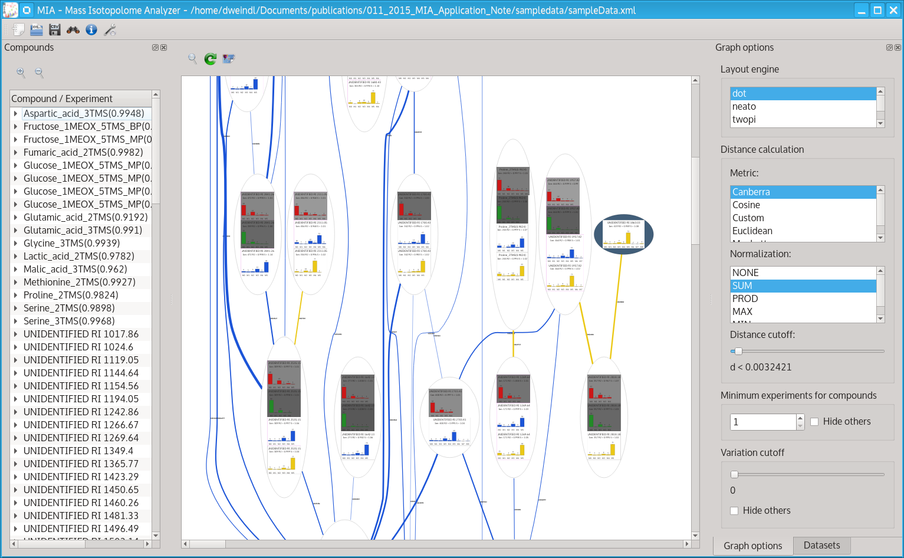
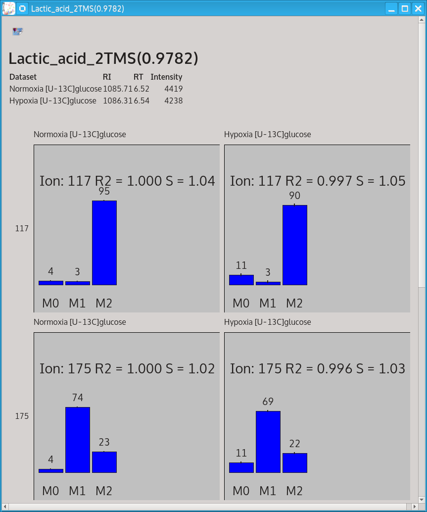

|
|
Home
MIA detects and visualizes isotopic enrichment in GC-
EI-MS datasets in a non-targeted manner. It provides an easy-to-use
graphical user interface that allows for visual mass isotopomer distribution analysis across multiple datasets. MIA helps to reveal changes
in metabolic fluxes, visualize metabolic proximity of isotopically enriched compounds and shows the fate of the applied stable isotope
labeled tracer.
When using MIA, please cite:
Daniel Weindl, Andre Wegner, and Karsten Hiller.
MIA: Non-targeted mass isotopolome analysis. Bioinformatics, 2016 doi:10.1093/bioinformatics/btw317
top
Downloads
Linux .deb installation packages:
- MIA 1.0.0-9 64bit for Ubuntu 16.10 (last update: 06.02.2017)
- MIA 1.0.0 64bit for Ubuntu 15.10
Windows:
Other:
top
Screenshots

The MIA main window showing mass isotopomer distributions of isotopically enriched compounds in different datasets (bar colors). The edges connect compounds with similar labeling patterns, a sign of thir biochemical proximity.

Detailed fragment mass isotopomer distributions.
top
Publications
MIA application note (please cite when using MIA):
Application of MIA for the analysis of hypoxic cancer cell metabolism:
- Daniel Weindl, Thekla Cordes, Nadia Battello, Sean C. Sapcariu, Xiangyi Dong, Andre Wegner and Karsten Hiller. Bridging the gap between non-targeted stable isotope labeling and metabolic flux analysis. Cancer & Metabolism, 2016, 4:10 [ Full text ]
MetaboliteDetector software (recommended to be used for peak picking and deconvolution prior to MIA analysis):
- Hiller, K.; Metallo, C. M.; Kelleher, J. K. & Stephanopoulos, G. Nontargeted elucidation of metabolic pathways using stable-isotope tracers and mass spectrometry. Anal Chem, 2010, 82, 6621-6628. [ Pubmed ]
The underlying non-targeted tracer fate detection (NTFD) algorithm for the non-targeted quantitative detection of isotopic enrichment:
- Weindl, D.; Wegner, A. & Hiller, K. Methods in Enzymology, Academic Press, 2015, 561, 277 - 302 [ Pubmed ]
- Hiller, K.; Wegner, A.; Weindl, D.; Cordes, T.; Metallo, C.M.; Kelleher, J.K.; Stephanopoulos, G. NTFD--a stand-alone application for the non-targeted detection of stable isotope-labeled compounds in GC/MS data. Bioinformatics, 2013, 29(9), 1226-8 [ Pubmed ]
Protocol for metabolite extraction from mammalian cells, sample preparation and GC-MS analysis:
- Hiller, K.; Hangebrauk, J.; Jäger, C.; Spura, J.; Schreiber, K. & Schomburg, D. MetaboliteDetector: comprehensive analysis tool for targeted and nontargeted GC/MS based metabolome analysis. Anal Chem, 2009, 81, 3429-3439 [ Pubmed ]
top
Weblinks
Related software
- MetaboliteDetector - Deconvolution and Analysis of GC/MS Data
- NTFD - A tool for non-targeted detection of stable isotope labeled ions
- FFC - A tool for the determination of composition of mass spectrometric fragment ions
Labs
top
Contact
Dr. Daniel WEINDL
sci(a)danielweindl.de
Prof. Dr. Karsten Hiller
karsten.hiller(a)tu-braunschweig.de
BRICS Braunschweig Integrated Centre of Systems Biology
TU Braunschweig
Rebenring 56
D-38106 Braunschweig
top
|